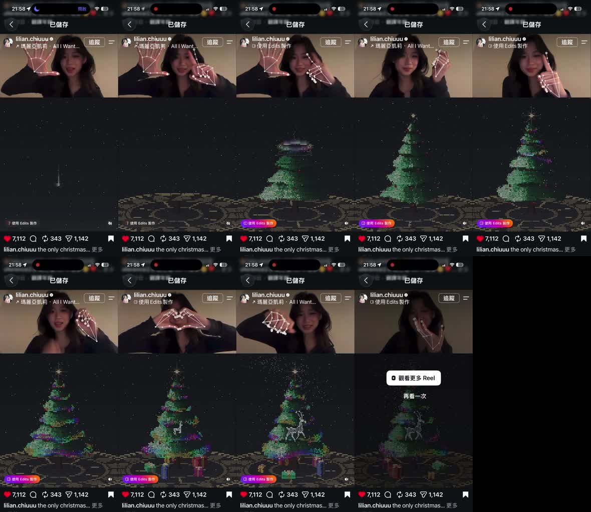

<title>聖誕樹互動計劃</title>
<meta name="claude:viewport-fit-sides" content="cover">
<link rel="stylesheet" href="https://fonts.googleapis.com/css2?family=Instrument+Serif:ital@0;1&family=Noto+Serif+TC:wght@500;700&family=Noto+Sans+TC:wght@400;500;700&display=swap">
<style>
/* 版面：單欄長文，深色為底，章節用細線分隔；色票與表格靠 grid。 */
:root{
  --bg:#07100B; --bg2:#0C1A12; --fg:#EFE3C3; --mute:#9DB0A2; --line:#1F3A2B;
  --green:#1E5C3A; --green2:#3C9A63; --cream:#EFE3C3;
  --pink:#F2A7D8; --cyan:#8FE3FF; --violet:#B48CFF; --gold:#E8C170; --magenta:#FF4FD8;
  --display:"Instrument Serif","Noto Serif TC",Georgia,serif;
  --body:"Noto Sans TC",-apple-system,"PingFang TC",sans-serif;
  color-scheme:dark;
}
*{box-sizing:border-box}
body{margin:0;background:var(--bg);color:var(--fg);font-family:var(--body);font-size:16px;line-height:1.8;
  padding-left:max(16px,env(safe-area-inset-left,0px));padding-right:max(16px,env(safe-area-inset-right,0px));padding-block:0 96px}
main{max-width:860px;margin:0 auto}
header{padding:72px 0 40px;border-bottom:1px solid var(--line)}
h1{font-family:var(--display);font-weight:500;font-size:clamp(44px,8vw,84px);line-height:1.02;margin:0 0 20px;letter-spacing:-.01em;text-wrap:balance;
  background:linear-gradient(100deg,var(--cream) 0%,var(--pink) 35%,var(--cyan) 65%,var(--cream) 100%);-webkit-background-clip:text;background-clip:text;color:transparent}
.lede{font-size:18px;max-width:40em;color:var(--fg);margin:0}
section{padding:48px 0;border-bottom:1px solid var(--line)}
h2{font-family:var(--display);font-weight:500;font-size:36px;line-height:1.1;margin:0 0 24px;color:var(--cream)}
h3{font-size:17px;font-weight:700;margin:32px 0 10px;color:var(--cream)}
p{margin:0 0 14px;max-width:40em}
ul{margin:0 0 14px;padding-left:1.2em;max-width:42em}
li{margin:0 0 6px}
.mute{color:var(--mute)}
code{font-family:ui-monospace,SFMono-Regular,Menlo,monospace;font-size:.9em;color:var(--cyan);background:var(--bg2);padding:1px 6px;border-radius:4px}
.refs{display:grid;grid-template-columns:repeat(auto-fit,minmax(240px,1fr));gap:14px}
.ref{background:var(--bg2);border:1px solid var(--line);border-radius:10px;padding:14px 16px;min-width:0}
.ref .sw{display:flex;gap:6px;margin:0 0 10px}
.ref .sw i{display:block;width:26px;height:26px;border-radius:50%;border:1px solid rgba(255,255,255,.08)}
.ref b{display:block;margin-bottom:4px}
.ref a{color:var(--cyan);text-decoration:none;font-size:14px}
.ref a:hover{text-decoration:underline}
.ref p{font-size:14px;color:var(--mute);margin:4px 0 0}
.flow{display:grid;grid-template-columns:1fr;gap:12px}
.step{display:grid;grid-template-columns:72px 1fr;gap:16px;background:var(--bg2);border:1px solid var(--line);border-radius:10px;padding:18px 20px;min-width:0}
.step .n{font-family:var(--display);font-size:44px;line-height:1;color:var(--gold)}
.step b{display:block;font-size:17px;margin-bottom:4px}
.step p{font-size:15px;margin:0 0 6px}
.step .ok{font-size:14px;color:var(--pink)}
.two{display:grid;grid-template-columns:repeat(auto-fit,minmax(300px,1fr));gap:24px}
.two>div{min-width:0}
.pal{display:grid;grid-template-columns:repeat(auto-fit,minmax(130px,1fr));gap:10px;margin:0 0 20px}
.pal div{border-radius:8px;padding:56px 12px 10px;font-size:13px;line-height:1.4;border:1px solid rgba(255,255,255,.06)}
.pal small{display:block;color:rgba(255,255,255,.7);font-family:ui-monospace,Menlo,monospace}
.tbl{overflow-x:auto;margin:0 0 16px}
table{border-collapse:collapse;width:100%;min-width:560px;font-size:15px}
th,td{text-align:left;padding:10px 12px;border-bottom:1px solid var(--line);vertical-align:top}
th{color:var(--mute);font-weight:500;font-size:13px}
td:first-child{white-space:nowrap;font-weight:700}
td.num{font-variant-numeric:tabular-nums;white-space:nowrap}
.tri{display:grid;grid-template-columns:repeat(auto-fit,minmax(200px,1fr));gap:12px;margin:0 0 20px}
.tri div{background:var(--bg2);border:1px solid var(--line);border-radius:10px;padding:22px 18px;text-align:center}
.tri .w{font-family:var(--display);font-size:34px;line-height:1.1;
  background:linear-gradient(100deg,var(--cream),var(--pink),var(--cyan));-webkit-background-clip:text;background-clip:text;color:transparent}
.tri small{display:block;color:var(--mute);margin-top:6px;font-size:13px}
.hud{background:#020603;border:1px solid var(--line);border-radius:10px;padding:18px 20px;font-family:ui-monospace,Menlo,monospace;font-size:13px;color:var(--cyan);line-height:1.7;overflow-x:auto}
.hud .m{color:var(--magenta)}
.hud .c{color:var(--cream)}
.frame{border:1px solid var(--line);border-radius:10px;overflow:hidden;background:#000;margin:16px 0}
.frame img{display:block;width:100%;max-width:100%}
.frame p{font-size:13px;color:var(--mute);margin:0;padding:8px 12px}
.skills{display:grid;grid-template-columns:repeat(auto-fit,minmax(220px,1fr));gap:10px}
.skills div{background:var(--bg2);border:1px solid var(--line);border-radius:8px;padding:10px 14px;font-size:14px;min-width:0}
.skills code{display:block;color:var(--gold);background:none;padding:0;margin-bottom:2px}
.ask{background:var(--bg2);border:1px solid var(--gold);border-radius:10px;padding:18px 20px}
.ask b{color:var(--gold)}
@media (max-width:520px){.step{grid-template-columns:1fr}.step .n{font-size:32px}}
@media (prefers-reduced-motion:no-preference){h1{background-size:200% 100%;animation:sheen 9s linear infinite}}
@keyframes sheen{to{background-position:200% 0}}
</style>

<main>
<header>
  <h1>聖誕樹互動計劃</h1>
  <p class="lede">一棵用手就能點亮的聖誕樹。鏡頭裡的人有萊卡感的濾鏡，點綴在臉旁飄，雙手交疊會飛出一隻光蝴蝶。整體是 y2k、數位、迷幻、暗中有光，帶 Blender 渲染的顆粒。</p>
  <p class="lede" style="margin-top:18px"><a href="https://claude.ai/artifact/DQD6TRj5CoUCWCRUASZoEW" target="_blank" rel="noopener" style="color:var(--cyan)">第 1 步：Design System 頁</a><br><a href="https://claude.ai/artifact/GFDiyz1VN62pUDp93cdFo8" target="_blank" rel="noopener" style="color:var(--cyan)">第 2 步：互動原型</a><br><a href="https://chang7856.github.io/xmas-tree/" target="_blank" rel="noopener" style="color:var(--gold)">第 3 步：成品第一版（手機開相機）</a></p>
</header>

<section>
  <h2>參考圖的解讀</h2>
  <div class="refs">
    <div class="ref"><div class="sw"><i style="background:#1E4D2E"></i><i style="background:#6E8C2A"></i><i style="background:#EFE3C3"></i><i style="background:#0B1A10"></i></div>
      <b>樹：點陣海報 A</b><a href="https://www.pinterest.com/pin/686869380717588189/" target="_blank" rel="noopener">pinterest.com/pin/686869380717588189</a>
      <p>失焦的深綠花園上，用米白小方點排出花形，旁邊是小字排版。樹要用這種 dither 點陣畫。</p></div>
    <div class="ref"><div class="sw"><i style="background:#2F6A33"></i><i style="background:#C99A2E"></i><i style="background:#F5EBD3"></i><i style="background:#D9A7C9"></i></div>
      <b>樹：Blooming 海報 B</b><a href="https://www.pinterest.com/pin/1092545190889809927/" target="_blank" rel="noopener">pinterest.com/pin/1092545190889809927</a>
      <p>綠金光暈上，ASCII 字元堆出一朵花，襯線大字帶全息漸層，角落有座標小字。文字風格照這張。</p></div>
    <div class="ref"><div class="sw"><i style="background:#F3D9E6"></i><i style="background:#B9A7F0"></i><i style="background:#9DE0B5"></i><i style="background:#F7E39A"></i></div>
      <b>點綴：直線光痕</b><a href="https://www.pinterest.com/pin/827536500333557538/" target="_blank" rel="noopener">pinterest.com/pin/827536500333557538</a>
      <p>粉白霧底，彩色光點拉成垂直細線，像底片漏光。鏡頭畫面上方與兩側用這種光痕。</p></div>
    <div class="ref"><div class="sw"><i style="background:#C9C6C2"></i><i style="background:#E35C8A"></i><i style="background:#F3C7D8"></i><i style="background:#7CC4D8"></i></div>
      <b>點綴：全息光球</b><a href="https://www.pinterest.com/pin/426927239692301276/" target="_blank" rel="noopener">pinterest.com/pin/426927239692301276</a>
      <p>灰底上六顆柔邊彩虹光球，每顆下面一句小字（LOVE YOU、AM AT PEACE）。這是飄在臉旁的裝飾本體。</p></div>
    <div class="ref"><div class="sw"><i style="background:#0B0A16"></i><i style="background:#B48CFF"></i><i style="background:#E9E2FF"></i><i style="background:#8FE3FF"></i></div>
      <b>點綴：紫光點鏈</b><a href="https://www.pinterest.com/pin/1034139133214009918/" target="_blank" rel="noopener">pinterest.com/pin/1034139133214009918</a>
      <p>夜景上一串串紫色光點，中央一片全息飛碟光斑。光點鏈由上往下垂，垂在畫面邊緣。</p></div>
    <div class="ref"><div class="sw"><i style="background:#02040A"></i><i style="background:#FF4FD8"></i><i style="background:#5FE8FF"></i><i style="background:#FFFFFF"></i></div>
      <b>雙手交疊：光蝴蝶</b><a href="https://www.pinterest.com/pin/784118985164365647/" target="_blank" rel="noopener">pinterest.com/pin/784118985164365647</a>
      <p>黑底上一隻桃紅青藍的蝴蝶，邊緣色散抖動，旁邊是 <code>x: 227 y: 606</code> 這種追蹤座標與紅框。動畫影片。</p></div>
  </div>
  <div class="frame"><p>原始 Reel（lilian.chiuuu）：手勢骨架線加點陣樹。要保留的是互動方式，不是它的畫質。</p></div>
</section>

<section>
  <h2>流程</h2>
  <p>兩條線分開做：美學與動畫一條，手勢與技術一條。每一步妳點頭才做下一步，第 1、2 步接受前不寫產品程式碼。</p>
  <div class="flow">
    <div class="step"><div class="n">1</div><div><b>Design System 頁</b>
      <p>色彩、字體（英文、中文、土耳其文）、顆粒與光暈材質、樹與點綴的樣式規則、三語祝福的排版。附三張靜態畫面：樹未點亮、樹全亮、雙手交疊。</p>
      <p>同一頁放「動態樣本」：每種動畫一段可播放的時間軸，妳看曲線與速度對不對。</p>
      <span class="ok">妳點頭後進第 2 步。</span></div></div>
    <div class="step"><div class="n">2</div><div><b>互動原型頁</b>
      <p>用一段預錄的手部影片驅動，不開相機，妳在任何裝置都能看。上方一排按鈕切換七個手勢與三種語言，右側說明每個手勢觸發什麼、為什麼。</p>
      <p>樹、點綴、濾鏡、蝴蝶都是真的 WebGL，不是示意圖。</p>
      <span class="ok">妳點頭後進第 3 步。</span></div></div>
    <div class="step"><div class="n">3</div><div><b>程式碼與上線</b>
      <p>接真實相機與手勢辨識，手機 Safari 與 Chrome 都要 60 fps。掛在 https 網址（開相機必須）。妳用自己的手機實測後才算完成。</p></div></div>
  </div>
</section>

<section>
  <h2>視覺系統</h2>
  <div class="pal">
    <div style="background:#07100B;color:#EFE3C3">夜底<small>#07100B</small></div>
    <div style="background:#1E5C3A;color:#EFE3C3">樹綠<small>#1E5C3A</small></div>
    <div style="background:#3C9A63;color:#07100B">亮綠<small>#3C9A63</small></div>
    <div style="background:#EFE3C3;color:#07100B">米白點<small>#EFE3C3</small></div>
    <div style="background:#E8C170;color:#07100B">星金<small>#E8C170</small></div>
    <div style="background:#F2A7D8;color:#07100B">全息粉<small>#F2A7D8</small></div>
    <div style="background:#8FE3FF;color:#07100B">全息青<small>#8FE3FF</small></div>
    <div style="background:#B48CFF;color:#07100B">光鏈紫<small>#B48CFF</small></div>
    <div style="background:#FF4FD8;color:#07100B">蝶桃紅<small>#FF4FD8</small></div>
  </div>
  <div class="two">
    <div>
      <h3>樹</h3>
      <ul>
        <li>六到八萬個點組成的點雲，每個點是米白小方塊，用 4×4 Bayer 有序抖動決定亮暗，和海報 A、B 同一種質地。</li>
        <li>點的顏色從樹綠到亮綠，被點亮後摻入星金與全息粉青。</li>
        <li>樹後面是失焦的深綠光暈，慢慢呼吸；再後面是極細的星塵。</li>
        <li>樹頂一顆星，用 ASCII 字元堆出，像海報 B 的花。點燈後拉出一道變形鏡頭的光漏。</li>
        <li>六萬個點是一個會變形的身體：樹、祝福文字、星系、星是同一批點，變形 1.4 秒，點會繞著樹心捲一圈再落定。</li>
        <li>點燈時表層 2% 的點彈出成 ASCII 飾品（✦ ❄ ◇ ✿ ✶ ✧ ❋ ○）。</li>
        <li>地板是抖動的鏡面，樹的倒影帶一點水波；背景是很暗的全息箔噪聲；每 12 秒一道 CRT 掃描帶；雪是落下的字元，近大遠小。</li>
      </ul>
      <h3>點綴（跟樹完全不同的語言）</h3>
      <ul>
        <li>全息光球：柔邊、彩虹內暈，三到五顆，每顆底下一句三語小字。</li>
        <li>直線光痕：從畫面頂端垂下的細光線，粉、青、黃交替。</li>
        <li>紫光點鏈：沿畫面左右邊緣一串串垂下。</li>
        <li>全部只在鏡頭畫面內飄，避開臉：臉的範圍加 12% 邊距是禁區，點綴靠近會被柔和推開。</li>
      </ul>
    </div>
    <div>
      <h3>人像濾鏡（萊卡感）</h3>
      <ul>
        <li>亮部微暖、暗部偏青綠的 S 曲線，飽和度降 15%。</li>
        <li>高光暈開（halation），四角暗角，35mm 底片顆粒。</li>
        <li>畫面四角一組細白取景框與快門資訊小字，不擋臉。</li>
      </ul>
      <h3>顆粒與質感</h3>
      <ul>
        <li>整個畫面最後一層是動態顆粒：暗部強、亮部弱，每一幀換圖，像 Blender Cycles 沒跑完的那種質地。</li>
        <li>樹與蝴蝶邊緣加 2 到 3 px 的紅青色散，y2k 的數位感從這裡來。</li>
        <li>光暈用 bloom，只對樹燈、星、蝴蝶起作用，人像不發光。</li>
      </ul>
      <h3>文字</h3>
      <div class="tri">
        <div><span class="w">Merry Christmas</span><small>英文</small></div>
        <div><span class="w" style="font-family:'Noto Serif TC',serif">聖誕快樂</span><small>中文</small></div>
        <div><span class="w">Mutlu Noeller</span><small>土耳其文</small></div>
      </div>
      <p>襯線大字配全息漸層，英文與土耳其文用 Instrument Serif，中文用 Noto Serif TC。字會先散成點再聚成字。</p>
    </div>
  </div>

  <h3>雙手交疊：光蝴蝶與 HUD</h3>
  <p>手腕交叉時，一隻桃紅青藍的蝴蝶從交疊處展開，翅膀邊緣色散抖動。四周浮出追蹤框與座標，旁邊一行行打字機式的文字：關於愛的經驗，混著數字與數位符號。</p>
  <div class="hud">
<span class="m">x: 227  y: 606</span>   ┌──────────┐<br>
<span class="c">被好好接住的那一刻</span>        │  ◇ 🦋 ◇  │   <span class="m">x: 467  y: 750</span><br>
<span class="c">the warmth of being held</span>  └──────────┘   0x4C4F5645<br>
<span class="c">sevilmek, 12.25, 23:59</span>    ❤ 100%   ░▒▓ LOVE ▓▒░   <span class="m">x: 603  y: 1182</span>
  </div>
</section>

<section>
  <h2>動畫設計</h2>
  <p>原則：沒有任何東西用切的。所有狀態變化至少 300 ms 交叉淡入，所有跟著手走的東西都經過彈簧，不直接貼手。</p>
  <div class="tbl"><table>
    <tr><th>動畫</th><th>時長與曲線</th><th>內容</th></tr>
    <tr><td>樹長出來</td><td class="num">3.2 s，ease-out expo</td><td>點從地面沿螺旋往上升，先成形再補色，最後星星落到樹頂。</td></tr>
    <tr><td>靜止呼吸</td><td class="num">6 s 一輪，正弦</td><td>樹縮放 0.98 到 1.02，背景光暈同步，樹每 40 s 自轉一圈。</td></tr>
    <tr><td>點燈</td><td class="num">1.8 s，ease-out cubic</td><td>光從下往上掃，每個點依高度延遲，加雜訊讓邊緣不整齊。每顆燈先 120 ms 閃亮再 400 ms 沉穩。</td></tr>
    <tr><td>熄燈收樹</td><td class="num">900 ms，ease-in quart</td><td>點往樹頂收成一顆星，星停 600 ms 再散成星塵。</td></tr>
    <tr><td>掛上裝飾</td><td class="num">彈簧 k=170 d=14</td><td>捏住的光球跟著指尖，放開後彈到最近的樹枝，落點閃一下。</td></tr>
    <tr><td>三語祝福</td><td class="num">散 350 ms，聚 500 ms</td><td>字散成米白點，重組成下一種語言。三語輪替，比愛心時一起浮上來。</td></tr>
    <tr><td>光蝴蝶</td><td class="num">展開 600 ms，過衝 8%</td><td>從交疊點長出，翅膀 2.4 Hz 拍動，HUD 標籤每 80 ms 冒一個，文字每字 40 ms。手分開後停 4 s，再 900 ms 散成粒子。</td></tr>
    <tr><td>點綴飄動</td><td class="num">持續，噪聲 0.15 Hz</td><td>每顆光球有自己的漂流路徑，跟手有輕微視差，靠近臉被推開，推力隨距離平滑。</td></tr>
    <tr><td>指尖光軌</td><td class="num">拖尾 1.2 s 衰減</td><td>食指尖留下金色光軌，軌跡用 Catmull-Rom 平滑，不抖。</td></tr>
  </table></div>
  <h3>手跟得絲滑的做法</h3>
  <ul>
    <li>21 個手部關鍵點先過 One Euro 濾波（minCutoff 1.0、beta 0.02），靜止不抖、快動不拖。</li>
    <li>手勢要連續 6 幀（約 200 ms）成立才觸發，連續 10 幀不成立才解除，不會閃爍。</li>
    <li>辨識 30 fps，畫面 60 fps，中間用插值補幀。</li>
    <li>手掉出畫面時，所有跟手的東西 400 ms 內淡出，回來再淡入。</li>
  </ul>
</section>

<section>
  <h2>手勢</h2>
  <div class="tbl"><table>
    <tr><th>手勢</th><th>判斷</th><th>樹的反應</th></tr>
    <tr><td>張開手掌</td><td>五指伸直，掌心朝鏡頭</td><td>點燈。星光從掌心飛到樹，樹由下往上亮。</td></tr>
    <tr><td>握拳</td><td>五指彎曲</td><td>熄燈，樹收成一顆星。再張開又長回來。</td></tr>
    <tr><td>捏合</td><td>拇指與食指尖距離小於手掌寬 20%</td><td>抓住一顆光球，拖到樹上掛。</td></tr>
    <tr><td>比愛心</td><td>雙手拇指相觸、食指相觸成心形</td><td>整棵樹散開，聚成 Merry Christmas、聖誕快樂、Mutlu Noeller 的全息點陣字。</td></tr>
    <tr><td>雙手拉開</td><td>兩手腕距離在 600 ms 內拉大超過畫面寬 40%</td><td>樹變成旋轉的兩臂星系；雙手合上變回樹。</td></tr>
    <tr><td>雙手交疊</td><td>兩手腕交叉，手掌重疊</td><td>光蝴蝶展開，HUD 座標與愛的文字出現。</td></tr>
    <tr><td>左右揮手</td><td>手腕在 400 ms 內橫移超過畫面寬 25%</td><td>樹轉向；祝福形態時換下一種語言。</td></tr>
    <tr><td>食指指向</td><td>只有食指伸直</td><td>指尖畫金色光軌，可以在空中寫字。</td></tr>
    <tr><td>撒鹽</td><td>單手手腕在 600 ms 內上下反轉 3 次，振幅超過畫面寬 3%</td><td>從手指撒出字元雪。</td></tr>
    <tr><td>張開手掌慢慢橫移</td><td>張開手掌成立時，手腕橫移小於畫面寬 8%／幀</td><td>樹跟著手轉。</td></tr>
  </table></div>
  <p class="mute">十個，全部保留。</p>
</section>

<section>
  <h2>技術</h2>
  <div class="two">
    <div>
      <ul>
        <li>手勢：MediaPipe Tasks Vision 的 HandLandmarker（兩隻手、GPU）與 FaceDetector（算臉的禁區）。全部在瀏覽器裡跑，影像不上傳。</li>
        <li>畫面：three.js r186。樹是一個 <code>Points</code> 物件加自訂 shader，一次 draw call。</li>
        <li>後製鏈：RenderPass → 半解析度 bloom → 一個合成 pass（萊卡曲線、色散、暗角、顆粒、抖動）→ OutputPass。</li>
        <li>時間軸：GSAP 管所有有頭有尾的動畫；跟手的用自寫彈簧。</li>
      </ul>
    </div>
    <div>
      <ul>
        <li>效能目標：iPhone 13 以上 60 fps，辨識 30 fps；樹不超過八萬點，點綴用 instancing。</li>
        <li>成品是一個獨立網頁，不是 Artifact（Artifact 不能開相機）。原型頁可以放 Artifact。</li>
        <li>字體：Instrument Serif、Noto Serif TC、Noto Sans TC，土耳其文的 ı ş ğ 都有。</li>
      </ul>
    </div>
  </div>
  <h3>已安裝的 skill</h3>
  <div class="skills">
    <div><code>threejs-shaders</code>自訂 GLSL、點雲 shader、色散</div>
    <div><code>threejs-postprocessing</code>bloom、顆粒、合成 pass</div>
    <div><code>threejs-geometry</code>點雲、instancing、3D 文字</div>
    <div><code>threejs-animation</code>程序式動作、混合</div>
    <div><code>threejs-performance</code>手機 60 fps 的量測與取捨</div>
    <div><code>threejs-fundamentals</code>r186 的正確 API</div>
    <div><code>gsap-scrolltrigger</code>GSAP 時間軸與緩動</div>
    <div><code>lightweight-3d-effects</code>輕量裝飾效果</div>
  </div>
  <p class="mute" style="margin-top:12px">來源：cloudai-x/threejs-skills（對準 three.js r186）、freshtechbro/claudedesignskills。裝在 ~/.claude/skills，所有專案都能用。</p>
</section>

<section>
  <div class="ask">
    <b>已決定</b>
    <ul style="margin-top:8px;margin-bottom:0">
      <li>是聖誕樹；「獸」是雙手交疊飛出的蝴蝶。</li>
      <li>雙手交疊的文字第一版已寫好，21 句，三種語言，在 Design System 的「光蝴蝶與 HUD」。每次從三種語言各抽一句。</li>
      <li>成品先掛 GitHub Pages：chang7856.github.io/xmas-tree。要掛 healyou.io 的子網域時加一筆 DNS 就能換。</li>
      <li>八個手勢全部保留。</li>
    </ul>
  </div>
</section>
</main>
